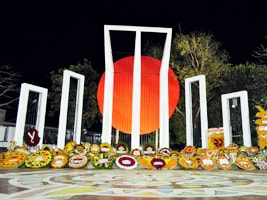

Mega Search Engine & Online Business Directory of Bangladesh


The Capital of Bangladesh is Dhaka with its exciting history and rich culture. Know the world over as the city of mosques and Muslim, it has attracted travelers from far and near through ages. However, according to recorded history it was founded in 1608A.D. As the seat of the imperial Mughal Victory of Bengal. Dhaka was the Capital of Bangladesh has grown into a busy city of about ten million people with an area of about 1353 sq. km. Having a happy blending of old and new architectural trends. Dhaka has been developing fast as a modern city and is throbbing with activities in all spheres of life. It is the Center of industrial, Commercial, Cultural, educational and political activities for Bangladesh. Motijeel is the main Commercial area of the city. Dhaka's major waterfront Sadarghat is on the bank of the river Buriganga and is crowded with all kinds of river craft, yatchs, country boats, motor launches, paddlesteamers, fisherman's boats all bustling with activity. Colorful rickshaws (tricycle) on the city streets are common attraction for the visitors.
Some of the outstanding tourist attractions of Dhaka:
Mosques
Dhaka has several hundred mosques. Prominent is the Seven Domed Mosques (17th century). Baitul Mukarram - National Mosque, Star Mosque (18th century), Chawkbazar Mosque and Huseni Dalan Mosque.
Hindu Temples
Dhakeswari Temple (11th century), Ramkrishna Mission.
Churches
Armenian Church (1981 A.D). St. Mary's Cathedral at Ramna, Church of Bangladesh or former Holy Rosary Church (1677 A.D). at Tejgaon.
Lalbagh Fort
It was built in 1678 A.D. by Prince Mohammad Azam. Son of Mughal emperor Aurangazab. The fort was the scene of bloody battle during the first war of independence (1857 A.D.) When 260 sepoys stationed here backed by the people revolted against British forces. Outstanding among the monuments of the Lalbagh are the tomp of Pari Bibi, lalbagh Mosque, Audience Hall and Hammam of Nawab Shaista Khan now housing a museum.
National Museum
Established as Dhaka Museum in 1913 AD It has been renamed as the National Museum and was shifted to its new building at Shahbag in 1983. It is a four storied building and has forty galleries under four departments, namely, (1) Natural History (2) History and classical Art, (3) Ethnography and Decorative art and (4) Contemporary Art and Worlds Civilization. The museum contains large number of interesting collection including sculptures and paintings of the Buddhist, Hindu and Muslim periods. It also has rich collection of old coins, metal images, books on art, ivory and silver filigree works, textiles including the world famous muslin fabric, embroidered quilt (Nakshi Kantha), arms and ammunitions of the bygone warriors, varieties of fine handicrafts and models of the village and town life, Contemporary paintings and sculptures. Above all, the valuable articles of the heroic liberation war of Bangladesh are also there. Open: Saturday-Wednesday, 10.00 a.m.-7.00 p.m. Thursday: Closed. Entrance Fee: Taka. 5.00. Phone: 880-2-8619397-99.
Central Shahid Minar
Symbol of Bengali Nationalism, this monument was build to commemorate the martyrs of the Historic Language Movement of 1952. Hundreds and thousands of people with floral wreaths and bouquets gather Eternal Flame to enliven the memory of the martyrs of our liberation War blown here recently.
National Memorial
Located at saver, 35 km. from Dhaka City. The memorial designed by architect Moinul Hossain, is dedicated to the sacred memory of the millions of unknown martyrs of the 1971 War of Liberation.
Mukti Juddha Museum
Situated at Segun Bagicha area of the city. The museum contains rare photographs of liberation War and used by the freedom fighters during the period. Phone: 880-2-9559091.
Ahsan Manzil Museum
On the bank to the river Buriganga in Dhaka the pink maiestic. Ahsan Manzil has been renovated and turned into a museum recently. It is an example of the nation's rich cultural heritage. It was the home of the Nawab (Ruler) of Dhaka and silent spectator to many events. The renovated Ahsan Manzil is a monument of immense historical beauty. It has 31 rooms with a huge dome atop which can be seen from miles around. It now has 23 galleries displaying portraits, furniture and household articles and utensils used by the Nawabs. Phone: 880-2-7391122.
Flock Art Museum
The Flock Art Museum was established in 1975 to fulfill the dream of the celebrated painter Shilpacharya Zainul Abedin. The Museum has a very rich collection of folk objects of different materials and forms of aesthetics and utilitarian values. These undoubtedly reflect the sentiments, impulse, temperament, moods, idiosyncrasy, skill and expertise of the artists. It is a national institution, which represents traditional art, heritage of Bangladesh, exhibiting objects of exceptional design and skill. Open: Saturday-Wednesday, 9.00 a.m. -5.00 p.m. Closed: Thursday, Friday & Govt. Holidays. Entrance: Free. Phone: 880-2-9716960.
Science Museum
Located at Agargaon, the museum is a modern learning center related to the latest scientific discoveries. Phone: 880-2-323246.

National Parliament
Jatiya Sangsad Bhaban (Parliament House) at Sher-e-bangla Nagar, designed by the famous architect Louis I. Khan, has distinctive architectural features. It may be called an architectural wonder of this region.
National Poet's Graveyard
Revolutionary poet Kazi Nazrul Islam died on the 29 August 1978 and was buried here. The graveyard is adjacent to the Dhaka University Mosque.
1857 Memorial (Bahadur Shah Park)
Built to commemorate the martyrs of the liberation war (1857-59) against the British rule. It was here that the revolting sepoys and their civil compatriots were publicly hanged.
Old High Court Building
Originally built as the residence of the British Governor, it illustrates a happy blend of European and Mughal architecture.
Buddhist Monastery Kamalapur Buddhist Monastery.
Banga Bhaban
The official residence of the President, located in the city. One can have an outside view of this grand place.
Ramna Green
A vast stretch of green garden surrounded by a serpentine lake near the Dhaka Sheraton Hotel.
Baldha Garden
Unique creation of the late Narendra Narayan Roy, the landlord of Baldha Year of establishment was 1904. Located in Wari area of Dhaka City (opposite Christian cemetery), the garden with its rich collection of indigenous and exotic plants is one of the most exciting attractions for naturalists and tourist. Divided into two units. The phyche, meaning the soul and the Cybele, meaning the mother goddess of nature, the garden houses about 1500 plants and tress Covering 672 species and 87 families. Many of them are rare plants procured from about 50 different countries of the world. Papyrus Amazon Lily, Victoria Regia, Camellia (Camellia Japonica), Ashoke tree, Baobab (Adansonia Digitala), Century flower plants (Fureraea gigantean), Canyehor and Sugar Palm of Philippines are some of the rare collections. A lovely lily pond inside the psyche a sun dial are worth visiting. The tombs of the founder and his son are located within the Cybele. Visit the twin of rewarding experience.
Open: Saturday-Thursday, 9.00 a.m. - 5.00 p.m.
Friday Closed. Entrance fee Taka. 2.00.
National Botanical Garden
Spread over an area of 205 acres of land. It has a collection of nearly 100 species of local foreign plants. Outstanding attractions are 100 varieties of roses in the rose corner, 100 varieties of bamboos in the bamboo grove, varieties of sandalwood and old Banyan tree. Quiet place out of the main city to meet the nature. Open: Saturday-Thursday. 9.00 a.m.-5.00 p.m. Entrance Free.
Dhaka Zooligical Garden
Popularly know as Mirpur Zoo located at a distance of about 16km. from Dhaka city center. Established on 230 acres of land. It has nearly 1400 animals and birds belonging to 124 species latest addition being the Kangaroo and Tapir. Busy enclosures are those of lions, Royal Bengal Tigers, Panthers, Deer, Monkeys Chimpanzees, Pythons, and Crocodiles, Elephants, Colorful Birds and other animals. A zoological museum with stuffed animals and birds is rich in collection. Angling and picnic facilities available inside the Zoo besides Kiosks and Restaurants. Open: Daily: 8.00 a.m.-6.00 p.m. Entrance Fee: adult Taka 2.00, Children Taka. 1.00 and Foreigners Taka. 5.00. Phone: 880-2-9003258.
National Park
Situated at Bhawal, 40 km. north of Dhaka on Dhaka-Trisal- Mymensingha highway. An ideal spot for visitors, artists, photographers, ornithologists and tourists. A vast (16,000 acres) national recreational forest. Main flora is Gajari (Assam sal) and fauna includes small tigers, leopards. Small bears, monkeys, porcupine, foxes, pythons, lizards and many local birds. A 1000-metre long meandering man-made lake having angling and rowing facilities, the flower gardens inside are added attraction to natural beauty. Mere walking or lazing under the shade of tree is pleasant. 20 picnic sports, 6 rest-house of the forest department with comfortable bed and modern amenities are available inside the national park. Prior permission/booking may be obtained from the Divisional Forest office, Mohakhali, Dhaka, Phone:880-2-602709.
Sonargaon
About 29 km. from Dhaka, Sonargaon, of 13th century A.D. is one of the oldest capitals of Bengal. A Folk-Arts and Crafts Museum has been established here. Other attractions in and around Dhaka include the Institute of Arts and Crafts with its representative collection of folk-arts and paintings, handicrafts.
Golap Village, Sadullahpur
For a little relaxation from urban mechanical life or to eliminate physical fatigue or mental exhaustion, we have many places to go around. But it takes time to travel somewhere far away and the cost is also higher. It is time to manage and spend time with the main obstacles. So there is a lot of places that can turn somewhere near Dhaka, around Dhaka. Golap Gram, sadullahpur, which is very beautiful in its midst and is one of the places to give good heart, which is located in Braulia union of savar near Dhaka. The location of sadullapur at the nbank of the turag river of Savar near very close to Dhaka. You can believe that this village will eliminate a lot of tiredness in your busy life.
A Short Trip to Mini Cox's Bazar: Moinot Ghat
Adventurous people love backpacking to remote areas. They trigger a risky place to get the full flavor of adventure. But there are a few people who are travel lover but not adventurous. These people used to crowd different restaurants or food courts a few years ago due to lack of places to visit in or near Dhaka.
Recently this trend is changing. Crazy people are now discovering many places near Dhaka to relax and to heal the heart from boredom and busy life. Considering the money, time and distance, Moinot Ghat is one of the best choice now. It's popularly known as mini cox's bazar.
If you want to witness the mesmerizing ambiance, melodious sound of the water wave, sunrise, and sunset, you can have a short trip to Moinot Ghat. It's located in Dohar Upazila of Nawabgonj near Dhaka.
Nuhash Polli
Nuhash Polli was founded in 1987. Initially it covered 22 bigha of land. Now it covers around 40 bigha. Actor Dr. Ejaz helped procure the land. The heavenly 'village' was named after Nuhash, Humayun Ahmed and Gultekin Khan's (his first wife) son. Ahmed was very fond of music. He loved to live amidst nature and relished the date plantation, which he had set up inside Nuhash Polli.
Most paths in Pirozali (পিরুজালী) village, under Mirzapur union of Gazipur Sadar Upazila, are lined with thick Shal (শাল) forest. One path with its beautiful play of light and shadow, welcomes passers-by, leading them towards Nuhash Polli, 25 km from Gazipur Sadar. This was the heaven of Humayun Ahmed, a magician of words, who spent most of his time there after he started directing TV plays and films. Nuhash Polli was open to the public and visitors would traverse great distances to get a view of the picturesque estate.
There is a dighi (big pond) at the extreme north end of Nuhash Polli. A wooden bridge has been constructed over the pond. A tent was placed on an artificial island in the middle of the pond. Humayun Ahmed's wife, Meher Afroz Shaon, conceived a daughter who died before seeing the light of day. Ahmed called her Leelaboti, after whom the pond was named. Ahmed also wrote a multi-volume novel called "Leelaboti".
A building called "Bhutbilash" was constructed adjacent to the pond while Ahmed was receiving treatment in USA. The last time he visited Nuhash Polli, inaugurated 'Bhutbilash', hoping to behold a 'ghost', seated by the veranda of 'Bhutbilash' at midnight.
Nuhash Polli houses a large number of sculptures crafted by local sculptor Asaduzzaman Khan. Spectators cannot but be impressed by a sculpture, ‘Ma O Shishu’ (mother and child) at the entrance to Nuhash Polli. Ghost- shaped and frog-like sculptures have been made to amuse children. A tree house is a delight for children.
Whenever Humayun Ahmed travelled within and outside the country, he would collect various types of trees. About 300 species of medicinal and fruit trees can be found within the precincts of Nuhash Polli. The writer also had a tea plantation at Nuhash Polli, which still exists. Initially, Ahmed accompanied his guests while they wandered through the Nuhash Polli estate. He introduced the visitors to various species and would invite them to taste the leaves of a particular scented tree.
A swimming pool stands near the bedroom of the deceased writer. He would swim there at times with his dear ones. Once he swam with noted Indian litterateur Sunil Gangopadhyay. Nuhash Polli was Ahmed's favorite shooting spot for almost all the TV plays and films directed by him.
Bahadur Shah Park
Bahadur Shah Park, formerly known as Victoria Park, is a park located in Old Dhaka, Bangladesh. It has a memorial dedicated to the soldiers killed by the British in the aftermath of the Indian Mutiny of 1857. It was built in 1858 at the initiative of Nawab Khwaja Abdul Ghani, in the Sadarghat area. It was named Victoria Park until 1947. After that, it was renamed after Bahadur Shah II, the last Mughal emperor.
Bahadur Shah Park is enriched with some architectural displays. It has two entrances. Plenty of tall trees really make the place majestic. The sculptures in the park are one of a kind. There is Dhaka's only Obelisk which commemorates the death of Dhaka Nawab's son. There is another magnificent sculpture at the western part. It was built in the honour of the martyrs. There is also an octagonal fountain in the middle of a star shaped fountain in the park. It is a place of utter historical importance for our nation. Bahadur Shah Park now attracts the young and the old, who come here to enjoy the peaceful environment. Whether you are interested in the history of Bangladesh or are simply looking for a place to take a relaxing stroll, Bahadur Shah Park is a delightful attraction in Dhaka.
Zinda Park
Zinda Park Is also Known as Oikotan Eco Resort. This is basically an eco-park. Zinda Park is one of the remarkable visiting place in Narayanganj district. The park is situated with the total area of about 150 acres. There are about 10 thousand trees inside the park with 250 different species. The park is featured with 5 lakes/ponds, paddle boating, tree houses, banglows.
The distance of Zinda park from Dhaka is about 37km. The convenient route is through Kuril 300 feet road (Purbachal Highway). You can go by bus. The route is through Kachpur bridge via Bhulta-Gausia. Another route is through Tongi Mirer Bazar via by-pass road.
Judge Bari and Ukil Bari
Traveling Nawabganj without paying a visit to Judge Bari and Ukil Bari (জজ বাড়ি এবং উকিল বাড়ি) (formerly known as Brojo Kutir) is nearly incomplete trip. Originally it was built as the residence of a Zamindar over a century ago, the Brojo Niketan was acquired by a judge in 1984, and henceforth became known locally as the judge bari, the residence of the judge.
Next door to the judge bari, on a corner of a sprawling playground made famous by the sheer attendance of Mahatma Gandhi in 1940, is another Zamindar's house, which has been acquired by a lawyer, and thus taken the new name Ukil Bari.
In a small shrine between these two old palatial houses, one will come across a statue whose head has been knocked down, allegedly by the Pakistan Army during our Liberation War in 1971, supposedly of Gautama Buddha.
A little inside the Ansar controlled areas, one would come across the Brojo Kutir - the older palace of the Zamindar, and yet another palatial house of Kokil Peyari. It has now turned into a local picnic spot.
Entertainment :
Cinema
Dhaka has several excellent air-conditioned cinema halls, which screen British, American, Continental and Bangladeshi films. All district towns have their own cinemas. Check the daily morning newspapers of details of current attractions.
Theatre
Bengali and Bengali translation of western plays are staged frequently. Popular theatre groups are: Dhaka Theatre, Nagarik Nattya Sampraday and Theatre.
Cultural Shows
Cultural shows are frequently held in several venues like Dhaka Metropolitan Theatre, Mohila Samity, Guide House and British Council Auditorium. Cheek with hotel receptions and the daily newspapers for details.
Sri Chaitanya Temple
About 500 years old famous temple of Sri Chaitannya Dev is located at Dhaka Dakhin nearly 45 km. south-east from Sylhet town. The place is revered for being the ancestral home of the famous vaishnava saint. Yearly fair is organized on the fullmoon day of the Bangal month Falgun. Hundreds and thousands of devotees from home and abroad attend this colourful fair.